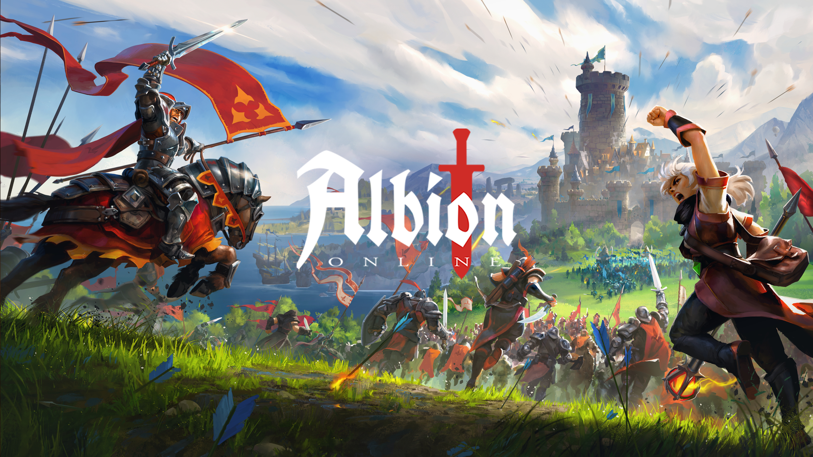

Albion

Sobre o Jogo
Albion é um jogo solo no qual o jogador pode escolher seu personagem entre quatro raças iniciais, cada uma com habilidades e características únicas:
- 🛡️ Zoiudo: Seres misteriosos que veem além do véu, dominando e invocando os espíritos dos mortos.
- 🔱 Titans: Guerreiros colossais com múltiplos braços, portadores de força brutal e múltiplas armas.
- 🔮 Espiritualistas: Mestres da essência arcana, capazes de manipular realidades com suas magias versáteis.
- 🐉 Dracônicos: Herdeiros do fogo primordial, capazes de assumir formas dracônicas em combate.
O jogo propõe uma experiência de exploração, combate e progressão em um mundo repleto de fantasias. O objetivo é enfrentar desafios como bosses e explorar dungeons, enquanto coleta itens valiosos, como armaduras, armas e artefatos mágicos.
História do Jogo
Há eras, o mundo de Albion era moldado apenas pelas forças da natureza — até que as primeiras espécies despertaram de um sono ancestral. Quatro grandes linhagens se ergueram das profundezas do mundo:
- Dracônicos, herdeiros do fogo primordial, capazes de assumir formas dracônicas em combate.
- Espiritualistas, mestres da essência arcana, capazes de manipular realidades com suas magias versáteis.
- Titãs, guerreiros colossais com múltiplos braços, portadores de força brutal e múltiplas armas.
- Zoiudos, seres misteriosos que veem além do véu, dominando e invocando os espíritos dos mortos.
Durante séculos, as quatro linhagens viveram em equilíbrio frágil — até que um artefato esquecido foi descoberto: o Núcleo Arcano, um cristal capaz de dobrar a realidade ao desejo de quem o possui.
Agora, Albion é um continente fragmentado, tomado por salas ancestrais e dungeons amaldiçoadas, onde cada tesouro é guardado por uma entidade poderosa, cada corredor guarda perigos ocultos, e nem todos os que falam contigo desejam te ajudar.
Você é um dos poucos com a coragem de atravessar as muralhas do desconhecido. Escolha sua linhagem, aprimore-se com armaduras lendárias, artefatos mágicos e armas esquecidas pelo tempo. Derrote bosses, conquiste os tesouros e escreva seu próprio destino.
Criação de Personagem
Ao iniciar o jogo, o jogador poderá criar seu próprio personagem e escolher uma entre as quatro espécies, com habilidades e características distintas.
Exploração e Progressão
O jogador explora um mapa com salas (ou áreas) que contêm dungeons. Em cada dungeon, há tesouros valiosos protegidos por bosses poderosos, que o jogador deve desafiar e vencer para obter recompensas.
Itens e Equipamentos
Durante a jornada, é possível coletar e equipar uma variedade de itens, como:
- Armaduras: Melhoram a defesa e, em alguns casos, oferecem habilidades passivas.
- Armas: Cada espécie pode se especializar em diferentes tipos de armas, com efeitos únicos.
- Artefatos mágicos: Itens raros que concedem poderes especiais e melhoram as habilidades do personagem.
Interações com NPCs
O mundo também é povoado por diversos NPCs (personagens não jogáveis). Muitos deles oferecem missões (quests) que ajudam o jogador a evoluir e desbloquear novos conteúdos. Porém, nem todos os NPCs são amigáveis. Alguns podem atacar ou colocar armadilhas, tornando as interações imprevisíveis e desafiadoras.
Equipe
A equipe de desenvolvimento do banco de dados inspirado no jogo Albion é composta por 5 membros do curso de Engenharia de Software da Universidade de Brasília (UnB).